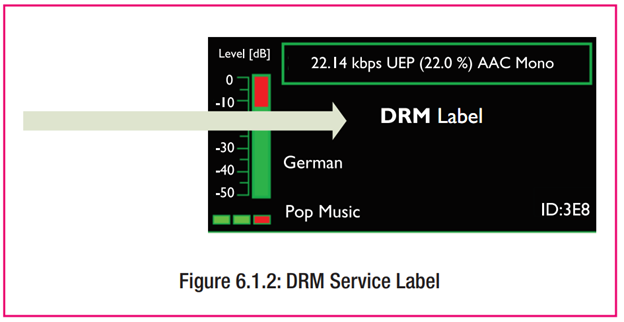
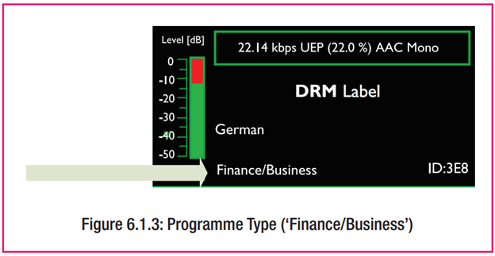
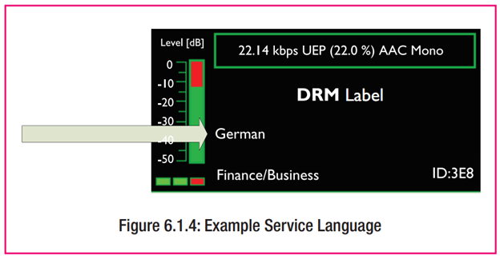
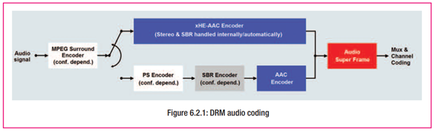
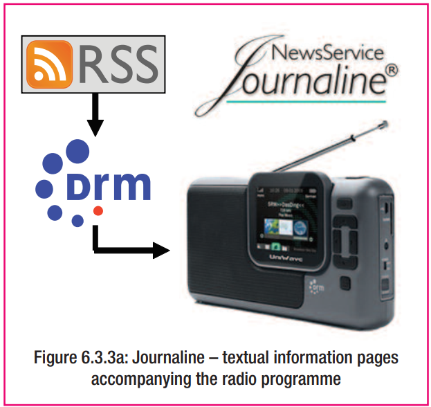
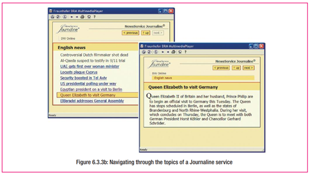
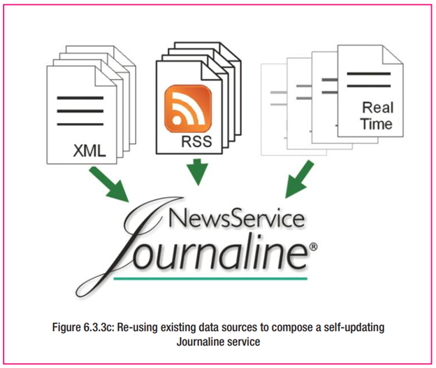
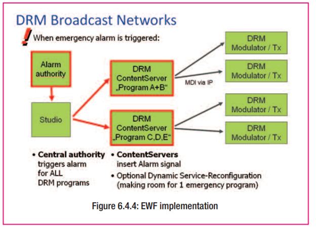

เนื้อหา DRM (DRM Content)
องค์ประกอบของเนื้อหาในการออกอากาศ DRM สามารถแบ่งได้เป็น 4 หมวดหลัก ได้แก่ ข้อมูลเมตา (Meta-data) ที่จำเป็นสำหรับการทำงานของระบบ, ข้อมูลเพิ่มเติมที่สถานีสามารถใส่เพิ่มได้และเครื่องรับจะรองรับโดยอัตโนมัติ, เนื้อหาเสียง (Audio Content) ทั้งด้านการเข้ารหัสและคุณภาพ, และบริการเสริม (Value-added Services) เช่น ข้อความ ข้อมูลข่าวสาร รูปภาพ และบริการโต้ตอบ
หมวด 1–3 จะถูกรองรับโดยเครื่องรับที่เป็นไปตามมาตรฐาน DRM โดยอัตโนมัติ ส่วนหมวด 4 อาจต้องประสานงานระหว่างผู้แพร่ภาพและผู้ผลิตเครื่องรับ
ข้อมูลเมตาในการออกอากาศ (Broadcast Meta-data)
ข้อมูลที่จำเป็น (Mandatory) จะระบุด้วยเครื่องหมาย {M}
รหัสบริการ (Service ID) {M}
- รหัสประจำแต่ละรายการ DRM ทั่วโลก
- ใช้สำหรับระบบ AFS เพื่อให้เครื่องรับค้นหารายการได้แม้เปลี่ยนคลื่น
- ไม่แสดงบนจอผู้ฟัง
- กำหนดโดยผู้แพร่ภาพ หรือหน่วยงานระดับชาติ
ชื่อรายการ (Service Labelling) {M}
- ข้อความสูงสุด 16 ตัวอักษร (UTF-8 สูงสุด 64 ไบต์)
- แสดงเป็นชื่อสถานีบนจอผู้รับ
- รองรับหลายภาษาและชุดอักขระ ขึ้นอยู่กับผู้ผลิตเครื่องรับ
- อาจรวมเลขความถี่เพื่อช่วยให้ผู้ฟังจดจำ

รูปภาพ 17 ชื่อรายการ
ประเภทของรายการ (Programme Type)
- ระบุประเภทเนื้อหา เช่น ข่าว ดนตรี ละคร
- เครื่องรับบางรุ่นสามารถกรองรายการตามหมวดหมู่ได้
- รองรับสูงสุด 29 ประเภท

รูปภาพ 18 ประเภทของรายการ
ภาษาของรายการ (Service Language)
- กำหนดภาษาได้ด้วยรหัส ISO
- มีประโยชน์ในพื้นที่ที่มีหลายภาษา
- เครื่องรับสามารถแสดงเฉพาะรายการในภาษาที่ผู้ฟังต้องการ

รูปภาพ 19 ภาษาของรายการ
ประเทศต้นทาง (Country of Origin)
- ระบุประเทศของ “สตูดิโอผลิตรายการ” ไม่ใช่สถานีส่ง
- ใช้รหัส ISO ประเทศ
- มีประโยชน์สำหรับผู้ฟังที่ต้องการติดตามข่าวจากประเทศบ้านเกิด
โลโก้สถานี (Station Logo)
- ส่งโลโก้เป็นส่วนหนึ่งของข้อมูล SPI
- ใช้แสดงบนจอสีในรถยนต์หรือเครื่องรับระดับสูง
- รองรับ 4 ขนาดภาพ และใช้แบนด์วิดธ์ต่ำ
เนื้อหาเสียง (Audio Content)
การเข้ารหัสเสียง (Audio Coding)
- ใช้ตัวเข้ารหัส MPEG xHE-AAC
- รองรับการทำงานที่ 6 kbps สำหรับโมโน
- รองรับการทำงานที่ 12 kbps สำหรับสเตอริโอ
- รองรับเนื้อหาทั้งเสียงพูดและดนตรี
- ยังรองรับ AAC และ HE-AACv2 สำหรับความเข้ากันได้ย้อนหลัง
- หากแบนด์วิดธ์เพียงพอ รองรับระบบเสียงรอบทิศทาง (5.1) โดยใช้ MPEG Surround

รูปภาพ 20 เนื้อหาเสียงและการเข้ารหัสเสียงของ DRM
การเพิ่มประสิทธิภาพคุณภาพเสียง
- หลีกเลี่ยงการเข้ารหัส-ถอดรหัสหลายครั้ง (tandem coding)
- ปัญหาเกิดจากตัวเข้ารหัสในแต่ละขั้นอาจแปลผลผิดจาก artefact ที่เกิดจากขั้นตอนก่อน
- แนวทางที่ดีที่สุด ได้แก่
- ใช้ต้นฉบับเสียงที่มีคุณภาพสูง
- เข้ารหัส DRM ที่ศูนย์กลาง เช่น สตูดิโอ
- ใช้โปรโตคอล MDI ในการส่งเสียงไปยังเครื่องส่ง เพื่อคงคุณภาพเสียงและควบคุมค่าการส่งระยะไกลได้
บริการเสริม (Value-added Services)
ภาพรวม
DRM รองรับบริการมัลติมีเดียและข้อมูลหลากหลาย เช่น
- ข้อความรายการ (DRM Text)
- ข่าว สภาพอากาศ และกีฬาแบบโต้ตอบ (Journaline)
- รูปภาพประกอบรายการ (Slideshow)
- ตารางผังรายการ (SPI/EPG)
บางบริการเช่น TPEG ออกแบบมาสำหรับระบบนำทางในรถยนต์ (machine-to-machine)
หมายเหตุ: ในโหมดความจุต่ำ เช่น AM บริการภาพควรใช้แบนด์วิดธ์รวมเพียง 2–4 kbps
ข้อความ DRM (DRM Text Messages)
- แสดงข้อมูลทันที เช่น ชื่อเพลง ข่าวสั้น หรือข้อมูลรายการ
- แสดงในรูปแบบข้อความเลื่อน (scrolling text) บนจอรับฟัง
Journaline
- เป็นบริการข้อความแบบโต้ตอบได้
- จัดหมวดหมู่ข่าว สภาพอากาศ กีฬา และเนื้อหาอื่น ๆ
- ผู้ใช้สามารถเลือกหัวข้อที่สนใจได้
- รองรับหลายภาษา และใช้งานในระบบวิทยุแบบ Free-to-Air ได้
- เหมาะกับผู้ใช้ที่ต้องการเนื้อหาแบบ On-Demand โดยไม่ต้องเชื่อมต่ออินเทอร์เน็ต

รูปภาพ 21 Journaline
ข้อมูลสถานีและรายการ (SPI – Service and Programme Information)
- มีลักษณะคล้ายกับ EPG (Electronic Programme Guide)
- แสดงตารางการออกอากาศพร้อมข้อมูลรายการ
- ช่วยให้เครื่องรับสามารถ
- แสดงข้อมูลรายการ
- บันทึกรายการล่วงหน้าได้ หากเครื่องรับรองรับ

รูปภาพ 22 SPI
สไลด์โชว์ (Slideshow)
- แสดงรูปภาพประกอบรายการ เช่น ปกอัลบั้ม โลโก้สถานี หรือภาพข่าว
- ต้องใช้เครื่องรับที่มีหน้าจอสี
- ใช้แบนด์วิดธ์เล็กน้อย
TPEG
- บริการข้อมูลจราจรและการเดินทาง
- ใช้ในระบบนำทางอัจฉริยะ (M2M)
- ใช้งานควบคู่กับ Journaline สำหรับผู้ใช้งานทั่วไป

รูปภาพ 23 TPEG
ฟีเจอร์เตือนภัยฉุกเฉิน DRM (Emergency Warning Feature – EWF)
ภาพรวม
- DRM สามารถใช้เป็นช่องสื่อสารสุดท้ายในสถานการณ์ฉุกเฉิน เช่น ภัยธรรมชาติ
- สัญญาณวิทยุสามารถครอบคลุมพื้นที่ที่โครงข่ายอื่นล่มได้
หน้าที่
- แจ้งเตือนผู้ฟังอย่างทั่วถึงและทันเวลา
- ผสานเสียง ข้อความ DRM และ Journaline หลายภาษา
การทำงาน
- เครื่องรับสามารถ
- เปิดขึ้นอัตโนมัติจากโหมดสแตนด์บาย
- สลับไปยังรายการเตือนภัย
- แสดงข้อความ สัญลักษณ์เตือน และเพิ่มระดับเสียงโดยอัตโนมัติ

รูปภาพ 24 การทำงาน EWF
การนำไปใช้งาน
- ใช้งานได้ในระดับท้องถิ่น ภูมิภาค หรือประเทศ
- ออกอากาศจากสถานีที่อยู่นอกพื้นที่ภัยพิบัติ
- เพิ่มความสามารถในการแจ้งเตือนแบบหลายภาษาและแสดงข้อมูลที่เจาะจงพื้นที่